X-Rec 技术报告
摘要
生成式建模的最新进展通过将推荐表述为下一物品生成问题，重塑了推荐系统。现有的召回方法主要遵循两种范式：用户到物品（U2I）方法使用一个或少数几个确定性嵌入来表示用户上下文，这限制了捕捉多样化、多峰兴趣的能力；而基于语义 ID 的自回归（SID-AR）方法虽然能建模更具表现力的分布，但存在量化误差和顺序解码吞吐量低的问题。为解决这些局限，我们提出 X-Rec，通过流匹配在连续物品嵌入空间中直接学习推荐分布，并生成嵌入触发向量以进行近似最近邻召回。X-Rec 包含三项关键设计，使该表述既有效又高效。首先，我们引入锚点条件，将生成分解为粗粒度语义区域选择和细粒度精炼。其次，我们采用黎曼流匹配，使生成轨迹与物品嵌入的超球面几何对齐。第三，我们设计了一种晚交互扩散 Transformer，将重复的速度场估计限制在最后一层 Transformer 中。在流式基准上，X-Rec 大幅优于 U2I 基线，召回质量与 SID-AR 方法相当，并且推理吞吐量达到 SID-AR 的 。X-Rec 还已作为 TikTok 上某一特定垂类内容的新召回源完成部署，连续两次上线均在垂类互动（+4.1484%）和整体互动（+0.0111%）上取得了显著提升。
1 引言
推荐系统已成为现代内容平台的核心基础设施，在工业规模上连接用户与视频、服务、商家和本地消费机会 (Ricci et al., 2010, 2021)。在大规模召回中，一个核心挑战是在下游排序之前，高效地召回紧凑且多样、能够反映用户不断变化的兴趣的物品。
推荐可以被表述为下一物品生成任务，即建模推荐分布 ，其中 表示下一物品，用户上下文 通常包含用户的历史交互序列 和期望的目标属性 11 1 例如， 可以表示待建模的期望目标行为。 (Covington et al., 2016; Kang and McAuley, 2018; Rajput et al., 2023)。为此，现有方法可以大致分为两种范式。第一种是双塔用户到物品（U2I）召回 (Cen et al., 2020; Chen et al., 2024; Zhang et al., 2024)，它将每个物品 表示为连续嵌入，并将用户上下文 编码为一个或少数几个固定用户嵌入，用于近似最近邻（ANN）召回。尽管这种范式在工业系统中被广泛采用 (Covington et al., 2016)，但它受限于其内在的 表达能力差：U2I 模型用 delta 分布近似目标分布 。从直觉上看，这种分布过于简单，无法捕捉多样化的用户兴趣；从理论上看，其模型容量也有限，例如在 VC 维方面 (Csikós et al., 2019)。尽管近期的多兴趣 U2I 方法通过引入更多嵌入来编码 从而缓解了这一问题，但其底层的分布表述并未改变。另一类工作是 SID-AR (Rajput et al., 2023; Deng et al., 2025; Zhou et al., 2025b)，它将物品嵌入离散化为语义标识符（SID），从而将推荐转化为自回归的下一词元预测问题。该方法在 SID 上定义了易于处理的分布，能够表示比 delta 分布灵活得多的分布。然而，它也面临若干实践和建模上的挑战。第一个挑战是我们所称的 有缺陷的 SID，它体现在两个方面：1) 对连续物品表示进行离散化不可避免地会引入量化误差 (Lee et al., 2022)，导致物品表示空间中的信息损失；以及 2) 理想情况下 SID 应与物品 ID 保持近似一一对应，而这在实践中难以满足。22 2 一种常见的变通方法是在 SID 序列后附加一个非语义哈希词元 (Rajput et al., 2023; Fu et al., 2026)，但这削弱了编码本身的语义结构。 第二个挑战是 吞吐量低：自回归模型顺序生成 SID 词元，限制了推理吞吐量，并对大规模召回场景构成显著瓶颈 (Stern et al., 2018; Kwon et al., 2023)。
在本文中，我们用物品嵌入表示每个物品，并使用基于流匹配（FM）的扩散直接建模条件推荐分布 (Lipman et al., 2022; Liu et al., 2022)。我们将此方法称为 X-Rec，强调回归到 本身作为推荐的基本对象。这一设计直接解决了现有范式的局限。首先，为克服 U2I 表达能力差的问题，X-Rec 将推荐视为连续物品嵌入空间中的通用分布估计。利用 FM，它可以捕捉复杂、多样且多峰的用户兴趣分布，而不是将其坍缩为一个或少数几个确定性召回点。其次，为克服 SID-AR 有缺陷的 SID 问题，X-Rec 直接在物品嵌入上操作，避免了 SID 离散化引入的量化误差，并消除了强制 SID 与物品 ID 之间脆弱的一一对应关系的需求。第三，为克服 SID-AR 吞吐量低的问题，X-Rec 通过扩散生成单个物品嵌入来实现高推理吞吐量，而不是自回归地生成多个 SID 词元，使其成为大规模召回的高效替代方案。
X-Rec 构建于扩散 Transformer（DiT）(Peebles and Xie, 2023; Wu et al., 2025) 之上，包含三项关键设计，使连续生成式召回既有效又高效。首先，我们引入锚点条件以实现由粗到细的生成。在生成目标物品嵌入之前，X-Rec 首先预测一个锚点，即目标嵌入的簇索引，然后以此锚点为条件进行嵌入生成。这一设计降低了从零开始直接生成细粒度物品嵌入的难度，同时也使生成过程更加可控。特别地，通过操控锚点分布，X-Rec 可以显式地鼓励对物品空间不同区域的更广覆盖，从而提高召回候选的多样性。在实验中，这种锚点引导的生成将 提高了 2.05% 个百分点，展示了其在提升召回质量方面的有效性。其次，我们采用黎曼流匹配（RFM）(Chen and Lipman, 2024; Kumar and Patel, 2026)，其中生成轨迹沿超球面上的测地线演化。这一表述与多峰物品嵌入的几何结构高度吻合，后者通常通过余弦相似度下的对比目标学习得到，因而自然位于球面流形上 (Radford et al., 2021)。与欧几里得空间中的矫正 FM 相比，RFM 避免了将模型容量浪费在迫使生成的嵌入回到球面上，而是直接建模物品嵌入空间的内在几何。实验表明，这种几何感知的表述将 绝对提高了 1.78%，突显了在其原生流形上建模物品嵌入的益处。第三，我们采用晚交互架构进行高效的速度场估计。X-Rec 不在每个扩散步都应用完整的 Transformer，而是仅使用最后一层 Transformer 来计算速度场。在实验中，与全层去噪设置相比，单层设计仅使 降低 1.05% 个百分点，同时将生成吞吐量提升约 。这使得 X-Rec 更适合召回质量和 Serving 效率都至关重要的大规模召回场景。
在离线评估中，X-Rec 大幅优于强基线。与 U2I 方法相比，它能够更精确地捕捉用户兴趣的多样化、多峰结构，从而带来显著的召回性能提升。与 SID-AR 相比，它取得了相当的召回性能，同时将推理吞吐量提升了 ，使其成为更适合大规模工业部署的实用生成式召回方案。X-Rec 还已作为 TikTok 上某一特定垂类内容的新召回源完成部署。在线 A/B 测试表明，连续两次上线均在垂类互动（+4.1484%）和整体互动指标（+0.0111%）上带来了显著收益。
2 不同范式的表述
设 表示物品集合。给定用户上下文 ，我们的目标是建模条件目标物品分布 ，其定义域为 ，其中 表示模型参数。遵循标准序列推荐，上下文 包含按时间顺序排列的历史交互序列 (Kang and McAuley, 2018; Rajput et al., 2023)。在我们的表述中，它额外包含期望的目标属性33 3 我们不区分物品特征（例如物品类型）与用户–物品交互特征（例如用户对物品的行为）。两者都作为属性包含在内。 ，其中 表示一个子属性。行为序列 由一系列交互元组组成，每个元组包含一个交互过的物品及其关联属性：
| (1) |
其中 表示与物品 关联的属性向量，对于 。
在推理时，我们生成多个召回触发向量 ，其来源为 ，并使用它们从 中召回候选物品。根据物品 与推荐分布 的表示方式不同，现有召回方法可以在不同范式下实例化。在下文中，我们从建模能力和计算复杂度两个方面比较这些范式。在复杂度分析中，我们假设所有方法都构建在一个 Transformer 骨干 (Vaswani et al., 2017) 上，该骨干具有 层、隐藏维度 ，其中条件长度为 ，生成的召回触发向量数量为 。Table 1 总结了不同方法的形式化与计算复杂度。
| Paradigms | Formalization | Complexity | ||
| Time | Space | |||
| U2I | Embeddings | Train: Sampled Categorical; Test: Delta | ||
| SID-AR | SIDs | Discrete Categorical | ||
| X-Rec | Embeddings | Continuous | ||
2.1 U2I
U2I 方法 (Chen et al., 2024; Cen et al., 2020) 使用嵌入 表示物品 。在训练时，它通常使用对比目标进行优化，例如 InfoNCE (Oord et al., 2018; Radford et al., 2021)，这可以解释为对采样类别分布进行建模：
| (2) |
其中， 表示温度超参数， 是负样本集合，通常通过批内负采样 (Chen et al., 2020) 等随机采样策略构建。由于其分母仅在 上归一化，而非在整个物品全集 上归一化，因此该目标是对全目录 softmax 分布 (Blanc and Rendle, 2018) 的一种采样式、有偏的近似。 在推理时，U2I 退化为 delta 分布：
| (3) |
相应地，召回触发向量只有一个选择：
| (4) |
随后通过 ANN 从 中召回推荐物品。可以看出，U2I 将所有概率质量集中在物品嵌入空间中的单个召回点上。这种表述过于受限，因为用户真实的兴趣分布可能是多样且多峰的，这超出了单点 U2I 模型的表示能力 (Cen et al., 2020)。
为解决这一局限，先前的工作如 ComiRec (Cen et al., 2020) 在训练时将用户上下文 编码为多个触发器。随后，模型依据匹配策略从这些触发器中选择一个用于对比学习44 4 例如，选择与真实物品嵌入最接近的触发器。。在推理时，模型可以输出多个触发器，每个触发器用于从物品嵌入空间中召回候选。然而，该方案仍然局限于同一 U2I 框架内。它仅增加了确定性召回点的数量，而没有显式建模条件分布 的完整流形。此外，用户嵌入的数量必须作为超参数预先定义，使得难以自适应地捕捉用户兴趣分布中内在的复杂性和数量可变的峰。因此，U2I 方法的表达能力较差。
由于 U2I 仅由一个编码器构成，其推理成本来自对条件词元的前馈和自注意力计算：
| (5) |
此外，U2I 无需 KV 缓存，因为它不需要为后续计算维护 KV 缓存。因此，其空间复杂度为：
| (6) |
2.2 SID-AR
SID-AR (Rajput et al., 2023; Deng et al., 2025; Zhou et al., 2025b) 将每个物品 表示为 SID 序列 ，从而将推荐分布分解为自回归序列模型：
| (7) |
这种形式化使得模型可以像语言模型一样训练，即在 SID 序列上使用交叉熵监督。在推理时，召回触发器通过束搜索获得：
| (8) |
与 U2I 不同，SID-AR 在离散 SID 序列上定义了一种组合式分布，因此在表示多峰用户兴趣方面更加灵活 (Uria et al., 2016)。
尽管具有这一优势，SID-AR 形式化引入了两个重要缺陷。首先，其召回质量高度依赖于 SID 的构造。由于 SID 是通过量化连续物品嵌入获得的，离散化过程不可避免地会丢失原始表示空间中的细粒度信息 (Lee et al., 2022; Rajput et al., 2023)。此外，离散码空间的组织必须使得生成的 SID 序列能够可靠地映射回有效且可区分的物品，这一要求在工业规模上难以满足。其次，SID-AR 继承了自回归解码的效率瓶颈。生成一个召回触发器需要多个顺序预测步骤和 KV 缓存维护，使得推理成本随 SID 长度增长，并限制了大规模召回系统中的吞吐量 (Stern et al., 2018; Kwon et al., 2023)。具体而言，SID-AR 的复杂度为：
| (9) | ||||
如我们所见，与 U2I 相比，SID-AR 因生成词元而具有额外的时间复杂度，并因维护 KV 缓存而具有额外的空间复杂度，这显著限制了其推理吞吐量。
总体而言，SID-AR 方法受困于有缺陷的 SID 和低吞吐量。
2.3 X-Rec
结合 U2I 和 SID-AR 的优势，我们提出的 X-Rec 将每个物品 表示为连续嵌入 ，并利用基于 FM 的扩散在连续嵌入空间中直接建模推荐分布 (Lipman et al., 2022; Liu et al., 2022)。本质上，FM 学习一个时间相关的速度场 ，将噪声样本 输运至目标物品嵌入 。在训练时，模型以 FM 目标进行优化，即令预测的速度场回归真实的条件速度场。在推理时，模型通过逐步去噪生成触发器，这对应于从学习到的推荐分布中采样55 5 推荐分布 的形式由速度场隐式定义：，其中 (Lai et al., 2025)。：
| (10) |
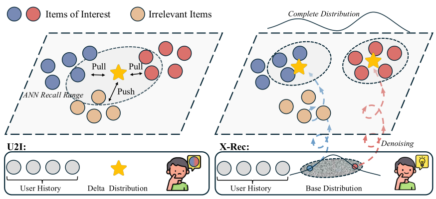
与 U2I 相比，该形式化可以建模一般的连续分布，提供足够的表达能力来捕捉多样且多峰的用户兴趣，如 Figure 166 所示 6 从决策边界的角度来看，使用多个触发器进行召回对应于选择候选 使得 。因此，正召回区域是由生成的触发器所诱导的 个半空间的并集。该类的 VC 维为 (Csikós et al., 2019)，表明增加触发器数量会直接增加可表示决策边界的复杂度。这为 X-Rec 相比单向量 U2I 召回具有更强表达能力提供了理论解释：多个触发器使 X-Rec 能够表示更丰富的多区域候选空间，而非单一的局部邻域。。关于案例研究，请参阅 section 4.5。
与 SID-AR 相比，X-Rec 直接在物品嵌入上操作，避免了离散化引入的量化误差，并消除了强制 SID 与物品 ID 之间建立脆弱的一一对应关系的需要。同时，X-Rec 的时间复杂度为：
| (11) |
此处， 表示每次速度场评估中使用的 Transformer 层数， 表示去噪步数。如 section 4.3.3 所示，我们通过实验发现，在每个去噪步骤仅使用最后的 Transformer 层，即 ，并将去噪步数设置为等于 Transformer 层总数，即 ，可提供有利的质量–效率权衡。在这种高效配置下，X-Rec 的时间复杂度变为：
| (12) | |||
借助这一设计，X-Rec 仅需存储条件词元的最后一层 KV 缓存，即
| (13) |
因此，X-Rec 的复杂度介于 U2I 和 SID-AR 之间。更重要的是，X-Rec 在表达能力和效率之间实现了有利的权衡：它通过建模灵活的连续推荐分布显著优于 U2I，同时避免了 SID-AR 所需的昂贵的逐词元自回归解码。这使得 X-Rec 具有足够的表达能力来捕捉复杂的用户兴趣分布，并且具有足够的效率用于大规模召回。
3 X-Rec 框架
在本节中，我们详细介绍所提出的 X-Rec 框架。我们首先简要概述 FM，然后描述 X-Rec 的高层训练和推理算法，随后介绍模型架构的具体实现。最后，我们介绍整体训练流程。
3.1 预备知识：流匹配
给定推荐上下文 ，令 表示真实物品 77 的物品嵌入 7 在本文中， 表示从经验分布中抽取的样本。，从经验推荐分布 中采样。FM 的核心思想是学习一个时间相关的流函数 ，其中 ，将简单的连续随机变量 （即噪声）变换为目标推荐分布 (Lipman et al., 2023) 的样本。具体而言，变换后的随机变量 诱导出模型分布 ，期望其近似 。因此，学习到的流应满足
| (14) |
一旦学习了这样的流，我们可以从 中采样：先抽取噪声，其来源为 ，然后通过学到的流对其进行去噪。然而，直接构造满足上述要求的流具有挑战性。幸运的是，当目标嵌入 给定时，定义条件流是直接的。该条件流 可以通过从噪声 到目标嵌入 、沿时间 进行插值来构造：
| (15) |
在大多数情况下，条件流独立于 。例如，欧几里得 FM 可以使用线性插值 (Lipman et al., 2023)。为方便起见，我们将 简写为 。对条件流关于时间求导，可得到相应的条件速度场：
| (16) |
FM 目标则回归一个神经速度场 ，使其在数据、噪声和时间步的期望上匹配该条件速度场：
| (17) |
Lipman et al. (2023) 已证明，最优回归速度场 诱导出的流函数满足 eq. 14 中的构造要求。更精确地说，所诱导的流 （我们称之为 ）定义为以下常微分方程（ODE）的解88 8 在本文中， 表示底层随机变量的模型估计对应物。：
| (18) | ||||
在推理时，我们使用欧拉离散化在表示空间 上对上述学习到的流进行数值积分，如我们将在 section 3.2.2 中所见。
3.2 算法
本节介绍 X-Rec 的学习和生成过程。在训练期间，模型在超球面上联合学习粗粒度语义锚点预测和以锚点为条件的 FM。在推理期间，X-Rec 首先从推荐上下文中识别一个锚点，然后在超球面上对学习到的向量场进行积分以生成召回触发器。我们依次描述训练和推理阶段。
3.2.1 训练
锚点损失。
尽管 FM 提供了一个通用的免模拟框架来学习连续输运路径 (Lipman et al., 2023)，但由于物品表示空间的复杂性和多峰性质，直接生成细粒度物品嵌入仍然具有挑战性。为解决这一问题，我们引入锚点条件化，它支持从粗到细的生成过程。具体而言，X-Rec 首先预测目标物品的粗粒度语义区域，然后以该区域为条件生成召回触发嵌入。我们用聚类中心索引 来表示该粗粒度区域，该索引对应于目标物品嵌入 。我们将 称为“锚点”，因为它提供了目标嵌入的粗粒度定位。这种分解降低了连续嵌入生成的难度，从而使生成过程更加稳定和可控。
自然地，我们使用交叉熵损失来优化锚点预测：
| (19) |
其中 表示上下文 下目标物品的真实锚点。
RFM 损失。
在同时以用户上下文和锚点为条件的情况下，X-Rec 随后通过逐步去噪生成最终的召回触发器。如前所述，每个物品 由一个嵌入 表示。嵌入模型通过对比表示学习和 归一化进行训练，因此物品嵌入自然地位于单位超球面上，即 ，其中 是嵌入维度。在这种设定下，使用线性插值和加性去噪在欧几里得空间中直接应用 FM 可能导致中间状态和生成状态偏离超球面。这些偏离流形的生成触发器与归一化物品嵌入不对齐。因此，我们将第 3.1 节中的一般形式化实例化为黎曼流匹配（RFM）（Chen and Lipman (2024); Kumar and Patel (2026)），确保流轨迹保持在超球面上。
具体而言，RFM 通过测地线插值构造条件流：
| (20) |
其中 从超球面上的基础分布中采样， 是 与 之间的测地距离。通过对测地路径关于 求导，可得到相应的条件速度场：
| (21) |
将该条件速度代入公式（17）中的流匹配目标，我们即可得到最终的 RFM 损失。
| (22) | |||
总损失。
在实践中，对于每个训练样本，我们采样多个噪声向量 和时间步 ，并使用得到的经验均值来估计 RFM 目标中的期望。X-Rec 的最终训练目标是上述两项的加权和：
| (23) |
其中 和 为权重系数。
3.2.2 推理
在推理阶段，X-Rec 首先预测一个锚点 。然后，它从基础分布 初始化状态，其中 表示单位超球面上的均匀分布。接下来，它通过时间步间隔为 的黎曼欧拉积分逐步对该状态去噪：
| (24) |
一旦 到达 ，终端状态 即被用作最终的召回触发向量。
3.3 模型架构
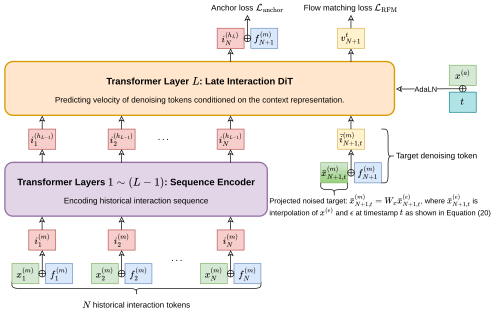
如 section 3.2 所述，X-Rec 由两个关键模块组成：锚点预测器 和速度预测器 。我们首先描述推荐上下文中的特征如何被编码，然后详述这两个模块的架构。
3.3.1 特征编码
推荐上下文 由历史交互序列 和期望目标属性 组成。我们现在描述 和 在我们的框架中如何表示。首先，属性通过将其子属性嵌入投影到模型维度 来表示：
| (25) |
其中 是可学习的属性投影矩阵。历史交互序列 中的每个交互，即一个元组 ，通过融合物品和属性的信息来表示：
| (26) |
其中 是物品嵌入投影矩阵。因此，编码后的历史交互序列 被表示为交互词元序列：
| (27) |
如 Figure 2 所示，编码后的交互序列 随后被送入一个 层 Transformer，以生成多层次的上下文用户表示：
| (28) | ||||
我们采用 Qwen3 风格（Qwen3 et al. (2025); Qwen3.5 (2026)）的 Transformer 主干，其中使用 RoPE（Su et al. (2024)）进行位置编码，并应用 QK 归一化以稳定训练。用户序列通过因果注意力掩码进行编码，使得 成为历史交互序列的有效上下文表示。此外，这种掩码策略允许生成的 KV 缓存在后续的速度预测阶段被复用，从而显著提高推理吞吐量。
3.3.2 锚点预测器
由于锚点 是离散的，锚点预测器自然是一个基于历史序列嵌入 和期望目标属性嵌入 的 softmax 分类器：
| (29) |
其中 是锚点 的分类器权重向量。
3.3.3 速度预测器：晚交互 DiT
速度预测器 大体遵循 DiT 设计 (Peebles and Xie, 2023; Wu et al., 2025)，但有一项重要修改：我们引入晚交互 (Khattab and Zaharia, 2020) 结构以实现高效的速度计算。给定当前去噪状态 ，我们首先以与交互词元相同的方式将目标属性信息 融入去噪状态：
| (30) |
我们没有将去噪词元 送入所有 Transformer 层，而是仅将其插入最后一层。这种设计允许模型复用预填充阶段计算的上下文历史表示，同时使用最后一层估计当前去噪状态的速度场。形式化地，
| (31) | ||||
其中 是沿当前状态的径向速度分量， 表示单位超球面在 处的切空间。该投影去除了速度的径向分量，确保预测速度位于切空间中。
如 Figure 2 所示，流时间步 和锚点 通过 AdaLN (Peebles and Xie, 2023) 对最后一个 Transformer 层进行条件化：它们的嵌入被相加，并共同调制注意力和 MLP 模块。编码历史交互序列时应用因果掩码，使其 KV 缓存可在迭代速度评估中被复用。如 section 4.3.3 所示，这种晚交互设计大幅提升了生成吞吐量，与全层去噪相比， 仅有轻微下降。
3.4 训练流程
X-Rec 的训练包括两个阶段：预训练和有监督微调（SFT）。预训练阶段旨在从用户的历史交互序列和物品嵌入中捕获通用的序列转移结构和知识，使模型能够学习广泛可迁移的表示。SFT 阶段进一步使预训练模型适应特定推荐场景，例如特定内容类型或期望目标属性。
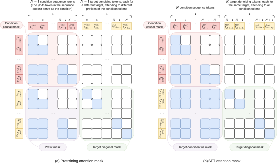
3.4.1 预训练
给定按时间排序的用户历史交互序列 ，预训练阶段对物品分布进行如下自回归分解建模：
| (32) |
这里，每个因子 均可使用 X-Rec 损失进行优化。因此，单个序列根据不同的前缀长度可产生 个下一物品预测对。
具体而言，对于每个目标物品 ，模型采样一个噪声向量和一个时间步，并计算 eq. 23 中定义的损失。为提高训练效率，我们引入一种专门的注意力掩码，使序列所有位置的损失可在单次预填充过程中计算。如 Figure 3 所示，该掩码限制每个去噪词元仅关注其对应的历史前缀，同时保持不同去噪词元彼此隔离。因此，X-Rec 可以并行训练所有前缀–目标对，而不改变序列预训练的语义。
预训练后，模型捕获通用的物品转移模式。在下一阶段 SFT 中，它进一步使上下文和目标语义适应下游服务任务。
3.4.2 有监督微调
SFT 使预训练的转移模型适应下游服务所使用的召回事件。对于每个合格的目标物品 ，其属性为 ，我们按时间顺序拼接两类用户历史来构造其序列 ：历史正序列和近期交互序列。历史正序列由用户有过有意义交互的物品组成，而近期交互序列包含用户在目标事件之前最近的活动。这两类来源提供互补的信号：前者反映稳定且持久的用户偏好，而后者捕获可能不会出现在长期正历史中的即时和短暂意图 (Yu et al., 2019)。
对于每个目标物品，我们抽取八个独立的噪声样本和时间步来估计 RFM 目标。如图 Figure 3 所示，我们还使用一种专门的注意力掩码，其中每个去噪词元关注完整的组合历史和相同的期望目标属性，而不同的加噪副本保持相互隔离。这使得同一目标的多个去噪词元可以并行训练，而不会在副本之间引入信息泄漏。
总体而言，SFT 阶段使预训练模型适应下游召回任务，使其能够生成更好地匹配服务时用户上下文和目标属性的召回触发向量。
4 离线实验
在本节中，我们在离线设置下评估 X-Rec。我们首先描述实验设置，包括按时间顺序的流式基准、评估指标和基线方法。然后，我们将 X-Rec 与代表性方法进行比较，并通过消融研究分析其关键设计选择。
4.1 实验设置
4.1.1 数据
我们在基于 TikTok 平台构建的工业流式基准上评估 X-Rec。所有模型首先在大规模历史交互序列上进行预训练，然后在流上训练和评估，遵循生产中所用的持续更新设置。对于预训练和流式数据，物品属性集 仅包含用户行为。因此，任务是在以用户历史交互序列为条件的情况下，生成与用户所表现出的兴趣对齐的物品。
预训练数据。
我们利用平台上的大规模用户–物品交互日志构建预训练数据。序列被划分为至多包含 200 个交互的块。
流式评估基准。
为了近似生产中的召回，即模型随着新鲜用户反馈持续更新，我们构建了一个由 47 个连续分区组成的流式基准。每个分区包含 2.6M 个采样训练样本和 10K 个测试样本，其中每个样本由历史正交互序列和近期交互序列组成，二者均有长度限制。我们从每个分区收集目标物品，以构建相应的 ANN 召回源。模型在分区上按顺序训练和评估：一个分区的最终检查点用于初始化下一个分区的训练，从而保持数据和模型更新的时间顺序。该协议捕获持续适应下的模型性能，并提供比静态评估划分更忠实的在线召回行为离线近似。
4.1.2 评估指标
对于每个测试样本 ，模型生成 个嵌入触发向量 。每个触发向量用于从 ANN 索引中召回其前 个最近物品。我们将 定义为
| (33) |
其中 表示前 个物品的集合，这些物品由触发向量 召回，而 表示测试集。该指标衡量测试样本的比例，这些样本中真实物品被包含在召回候选项的并集中。默认情况下，我们报告 ，并将其缩写为 。section A.1 报告每个快照的完整结果。
我们还使用吞吐量评估生成效率，以单个生产级 GPU 上每秒请求数来衡量。每个请求生成 个触发向量，与默认召回设置一致。吞吐量测量仅包括触发向量生成，不包括 ANN 查找阶段。
4.1.3 基线方法
我们将 X-Rec 与来自两个类别的广泛代表性开源基线进行比较。第一类包括 U2I 方法，包括 SASRec (Kang and McAuley, 2018)、LRURec (Yue et al., 2024) 和 DreamRec (Yang et al., 2023)99 9 尽管 DreamRec 基于扩散模型，但其原始实现仅生成单个嵌入用于召回。因此我们遵循该设置，并将 DreamRec 归类为 U2I 方法。。第二类包括基于 SID 的生成式方法，包括 TIGER (Rajput et al., 2023)、EAGER (Wang et al., 2024)、LATTE (Hou et al., 2026) 和 LLaDARec (Shi et al., 2025)。对于所有开源基线，我们遵循其原始论文中报告的模型配置。
我们额外实现了 X-Rec 的两个受控变体，以厘清学习范式和生成架构各自的影响。X-Rec-U2I 以对比目标训练，并为召回生成单个触发嵌入；而 X-Rec-AR 采用仅解码器架构自回归地生成 SID。两个变体均使用与 X-Rec 相同的上下文编码器配置，详见 section A.2。
对于生成单个召回嵌入的 U2I 方法，我们计算 ，其设置对应于 。对于基于 SID 的方法和 X-Rec，它们支持多个召回触发，我们默认采用 设置。当底层配置从上下文中可以明确时，我们将这两种设置都记为 。
所有模型都遵循相同的“先预训练、后流式 SFT”流程。为确保基于 SID 与基于嵌入的召回方法之间的一致性比较，我们采用统一的 ANN 评估协议。具体而言，基于 SID 的方法生成的 SID 通过各自的 RQ 码本解码为嵌入，所得嵌入被用作 ANN 召回的触发。
4.1.4 实现细节
X-Rec 采用 Qwen3-0.6B (Qwen3 et al., 2025) 作为其 Transformer 主干。移除词元嵌入层后，所得模型包含约 0.46B 参数。每个物品均为一个视频，并由一个归一化到单位超球面的 128 维多模态嵌入表示。SID 通过对物品嵌入进行 K-means 残差量化获得，使用 个大小为 的码本 (Zhou et al., 2025a)，得到平均重建余弦相似度 。
在预训练期间，我们训练模型一个 epoch（200K 步），使用 AdamW (Loshchilov and Hutter, 2017)，批大小为 4096。学习率在前 2K 步内线性预热至 ，随后按余弦调度衰减至 。在流式 SFT 期间，我们使用 AdamW 训练模型三个 epoch，学习率恒定为 ，批大小为 512。两个阶段中用户交互历史的最大长度均设为 200。我们将损失系数设为 和 。为通过边缘速度估计启用无分类器引导（CFG）(Ho and Salimans, 2022)，我们在训练期间以概率 5% 随机丢弃条件上下文。
在推理时，X-Rec 首先以温度 1.4 采样锚点，然后在 30 个去噪步中生成召回触发。我们在整个去噪过程中应用引导尺度为 3.0 的 CFG。
4.2 整体性能
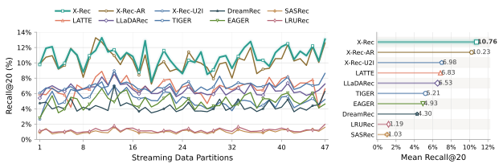
如 Figure 4 所示，在我们的流式基准上，X-Rec 显著优于大多数基线。通过两个 X-Rec 变体控制模型配置后，我们得出以下两个主要观察。
第一，X-Rec 的召回率略高于 X-Rec-AR。平均而言，X-Rec 达到 ，比 X-Rec-AR 高出 个百分点。在 47 个流式分区中，X-Rec 在 38 个分区上优于 X-Rec-AR，另有一个分区持平。这表明，就分布建模能力而言，FM 与 SID-AR 相当。更重要的是，如后文所示，X-Rec 在达到这一性能的同时具有显著更高的生成吞吐量，因为其触发可以并行生成，而不必逐词元串行解码。
第二，X-Rec 明显优于 X-Rec-U2I。X-Rec-U2I 的平均召回率仅为 ，落后 X-Rec 个百分点。由于 X-Rec-U2I 依赖单个召回嵌入，这一差距凸显了多模式兴趣建模的重要性。X-Rec 通过为不同兴趣模式生成多个触发来解决这一问题。此外，如 section 4.4.1 所示，即使 X-Rec 仅生成一个触发，并在与 X-Rec-U2I 相同的 协议下评估，它仍取得了更好的性能。
4.3 消融研究
我们进一步开展消融研究，以考察若干关键组件的贡献，包括锚点条件、RFM、晚交互和预训练。
4.3.1 锚点条件的影响
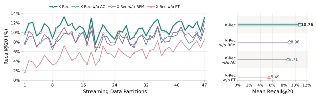
| Models | SID-1 Recall@20 (%) | SID-1 Recall@50 (%) |
| X-Rec w/o AC | 28.57 | 35.77 |
| X-Rec | 41.37 | 53.55 |
我们实现了一个不带锚点条件的 X-Rec 变体，记为 X-Rec w/o AC。在该变体中，模型不使用锚点引导，直接生成召回触发，其他所有设置与 X-Rec 保持一致。如 Figure 5 所示，锚点条件在 X-Rec 中起着关键作用。移除它会使平均 从 降至 ，即下降 个百分点。同时，X-Rec w/o AC 在所有 47 个流式分区上均劣于 X-Rec。
为进一步理解锚点条件的作用，我们将 X-Rec 和 X-Rec w/o AC 生成的触发量化回 SID，并考察首个 SID 数字是否与真实物品的首个 SID 数字一致。如 Table 2 所示，X-Rec 的首位数字召回率显著高于 X-Rec w/o AC。具体而言，召回率从 提升至 （在 top-20 下），以及从 提升至 （在 top-50 下），分别对应 和 个百分点的绝对提升。这些结果表明，锚点条件显著提升了模型识别正确粗粒度语义区域的能力，从而带来更好的端到端召回性能。
总体而言，锚点条件有效地将触发生成分解为粗粒度语义定位和细粒度精化两个阶段。这种分解简化了生成任务，并持续提升召回性能，同时引入的额外计算开销可以忽略不计。
4.3.2 RFM 的影响
我们实现了一个不带 RFM 的 X-Rec 变体，记为 X-Rec w/o RFM，方法是将 RFM 替换为欧几里得空间中的矫正 FM (Liu et al., 2022)，同时保持其他所有设置不变。如 Figure 5 所示，w/o RFM 变体的平均 为 ，落后 X-Rec 个百分点。X-Rec 在所有 47 个流式分区上均取得更高的召回率，表明几何感知的流设计能够持续提升触发质量。
这一提升源于将生成过程显式地落在归一化物品嵌入流形上。由于物品嵌入经过 归一化，有效的召回触发应位于单位超球面上。RFM 通过沿球面测地线传输样本，并将速度约束在每个状态处的切空间，从而将这一约束纳入生成动力学。因此，模型可以将全部容量用于学习物品流形内有意义的运动。相比之下，在欧几里得 FM 下，速度场必须隐式地处理两个耦合目标：向目标物品移动，以及纠正偏离超球面的偏差。这一额外负担使学到的动力学效率较低，且与归一化召回空间的对齐程度较差，从而导致召回触发不够准确。
4.3.3 晚交互的影响
X-Rec 使用晚交互，将每次速度场评估限制在最后一个 Transformer 层，即 。这里，我们通过改变速度评估层数 来研究性能与效率的权衡。对于所有配置，去噪步数固定为 30。我们还纳入 X-Rec-AR 作为参照。召回性能以流式分区上的平均 衡量，而效率以在生产级 GPU（BF16）上观测到的最大生成吞吐量衡量。在对吞吐量进行基准测试时，每个请求包含长度为 199 的条件序列，并要求模型生成 20 个触发。
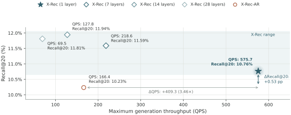
如 Figure 6 所示，增加 最初会提升检索性能，其中 14 层变体取得最高的平均 ，为 ，这一数值仅高出 个百分点（相对于 1 层变体）。然而，进一步将 增加到 28 会导致性能略有下降，表明使用更多层进行去噪并不一定能提升检索性能。相比之下，1 层变体的效率显著更高，其吞吐量分别达到 、 和 ，比较基准为 7 层、14 层和 28 层变体的吞吐量。此外，1 层的 X-Rec 在检索性能和生成效率上均优于 X-Rec-AR，平均 提升 个百分点，吞吐量提升 。
这些结果表明，单层晚交互设计提供了最佳的部署权衡：它在保持强劲召回性能的同时，大幅减少了生成过程中重复的 Transformer 计算。
4.3.4 预训练的影响
为单独考察预训练的贡献，我们将 X-Rec 与一个其他方面完全相同、但在流式基准上从头训练（即不带预训练）的变体进行比较。如 Figure 5 所示，移除预训练阶段会导致所有 47 个流式分区上出现显著且持续的性能下降。平均 从 10.76% 降至 5.49%，绝对下降 5.27% 个百分点。尽管未预训练的变体在流式 SFT 过程中逐渐改善，但它始终持续劣于预训练模型。这些结果表明，预训练提供了强大且可迁移的初始化，仅靠下游流式监督无法完全恢复，凸显了其在学习稳健表示以实现有效召回中的关键作用。
4.4 分析
我们进一步从触发的广度、多样性以及 SID 重建引入的表示损失方面分析 X-Rec。
4.4.1 召回的广度与深度
在固定候选预算下，增加 会将预算分配到更多生成的触发上，从而扩大对用户兴趣的覆盖范围；而增加 会为每个触发召回更多最近邻，从而实现对每个兴趣的更深层探索。为研究这一广度–深度权衡，我们在四种 配置下评估 X-Rec：、、 和 。我们还将 X-Rec 与 ComiRec-SA (Cen et al., 2020) 进行比较，后者是一种多兴趣 U2I 基线，使用自注意力导出多个用户兴趣嵌入。为公平比较，ComiRec-SA 配备与 X-Rec 相同的上下文编码器配置，因此我们将其所得变体记为 X-Rec-U2I-（详细实现见 section A.2）。我们使用生成触发之间的平均成对余弦相似度作为兴趣广度的代理指标，相似度越低表示覆盖越广。对于 的配置，我们将该成对余弦定义为 1。
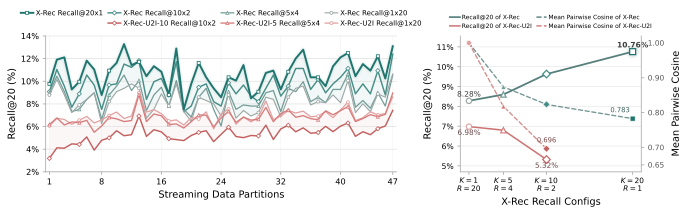
如 Figure 7 所示，对于 X-Rec， 随生成触发数 单调提升。平均 从 （在 下）增加到 、 和 ，分别对应 、 和 。将固定预算 20 个候选从 重新分配到 ，带来 个百分点的绝对提升。这一增益在整个评估流中保持一致： 在每个分区上都优于 ，并在 45 个分区上取得最佳或并列最佳结果，评估分区的总数为 47。同时，平均成对余弦相似度随 增加而降低，表明对用户兴趣的覆盖更广。综合来看，这些结果表明，在固定候选预算下，用更多触发拓宽兴趣覆盖比围绕更少触发探索更深邻域更有效。这凸显了 X-Rec 捕捉多种用户兴趣模式的能力。
然而，X-Rec-U2I- 呈现出不同的趋势。尽管增大 会降低平均成对余弦相似度，表面上拓宽了兴趣覆盖范围，但其 却显著下降。具体而言，平均召回率从 （在 下）下降到 （在 下），降幅为 个百分点。此外，在相同配置下，基于 ComiRec 的变体 X-Rec-U2I- 的表现明显逊于 X-Rec。例如，在 下，X-Rec-U2I- 的平均成对余弦相似度低于 X-Rec（ 对 ），但召回率却显著更低（ 对 ）。这表明 X-Rec-U2I- 的表面广度在很大程度上只是表象：其兴趣嵌入更加分散，却未能有效覆盖不同的用户兴趣。这是因为，尽管 X-Rec-U2I- 生成了多个兴趣嵌入，但它仍处于 U2I 对比学习范式之内，而非显式地对完整目标分布建模。此外，训练期间只有为给定目标所选中的那个兴趣嵌入会被优化。因此，当 增大时，每个嵌入所获得的监督信号变得更加稀疏，从而导致性能下降。
4.4.2 通过锚点温度调节多样性
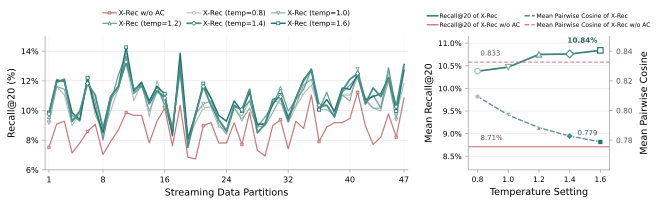
除了简化生成任务之外，锚点条件化还通过锚点分布 的采样温度，提供了一种控制触发多样性的自然机制。当温度趋近于零时，锚点分布退化为在最可能锚点上的 delta 分布。在这种情况下，所有生成的触发都集中在狭窄的语义区域内，导致多样性较低。当温度趋近于无穷大时，锚点分布收敛为在所有候选锚点上的均匀分布。此时生成的触发分散在不同区域，从而实现最大多样性。在本节中，我们改变温度，以研究触发多样性与召回性能之间的关系。
如 Figure 8 所示，锚点条件化同时提升了召回性能和触发多样性。即使在温度为 时，与不带 AC 的 X-Rec 相比，X-Rec 将平均成对余弦相似度从 降至 ，同时将平均 从 提升至 。将温度从 提高到 ，余弦相似度进一步从 单调下降至 ，同时 从 上升到 。这些结果表明，展平锚点分布会鼓励模型探索更广泛的语义区域，从而减少生成触发之间的冗余，并提高对相关物品的覆盖。
大部分召回提升发生在温度从 提高到 的过程中，此后增益逐渐饱和。具体而言，温度为 、 和 时， 分别达到 、 和 。因此，默认温度 提供了一个接近饱和的工作点。总体而言，锚点温度提供了一种有效机制，用于控制触发多样性，并平衡集中式利用与更广泛的召回覆盖。
4.4.3 重建目标揭示表示损失
在此，我们考察由 SID 量化误差导致的性能下降。我们没有用原始连续物品嵌入来监督 X-Rec，而是构建了一个使用 SID 重建嵌入作为训练目标的变体。具体而言，每个目标物品首先被映射到其 SID，然后通过 RQ 码本对 SID 进行解码，得到用于 SFT 的重建训练目标。
如 Figure 9 所示，用 SID 重建目标替换原始物品嵌入，在不同召回配置下均一致地损害性能。具体而言，平均召回率下降 – 个百分点，对应配置为 ；并下降 – 个百分点，对应配置为 ，平均差距分别为 和 个百分点。在 和 下退化最大，此时每个生成的触发只召回其最近的 ANN 邻居。在这种设置下，目标表示的微小偏移就可能直接改变最近邻结果。这表明 SID 重建扭曲了原始嵌入空间的细粒度邻域结构，并引入了不可忽视的信息损失。X-Rec 通过直接从连续物品嵌入目标中学习，避免了这一重建瓶颈。
4.5 案例分析
在本节中，我们展示生成结果的案例研究。具体而言，我们使用 t-SNE (Cai and Ma, 2022) 将 128 维嵌入投影到二维空间，并可视化用户的历史正反馈物品，以及由 X-Rec 和 X-Rec-U2I- 生成的触发。代表性示例1010 10 出于示例说明目的并满足合规要求，所有示例视频均基于相应视频类别由 AI 生成，不对应真实用户视频。 展示于 Figure 10，更多案例见 section A.3。
如图所示，以具有历史正交互的物品为代表的用户兴趣往往呈现多峰结构。例如，在 Figure 10(a) 中，用户历史中正交互的物品主要属于两个类别：汽车/卡车/摩托车与烹饪，在视频嵌入空间中形成两个不同的峰。用户下一个正交互的真实视频也很可能位于这些峰之一附近：在本例中，它属于汽车/卡车/摩托车类别。X-Rec 紧密逼近了这一分布。其生成的触发所形成的流形与历史正反馈物品的流形良好对齐，且生成触发与真实物品之间的最近余弦相似度达到 。相比之下，X-Rec-U2I-5 产生的是一个平均化表示。尽管它生成了五个不同的触发，其流形却坍缩到位于用户两个兴趣峰之间低谷处的单一峰。因此，它未能捕捉用户的多峰兴趣分布，其与真实物品的最近余弦相似度仅为 。这一可视化进一步表明，与 U2I 方法相比，X-Rec 能够更有效地建模多样化的用户兴趣。
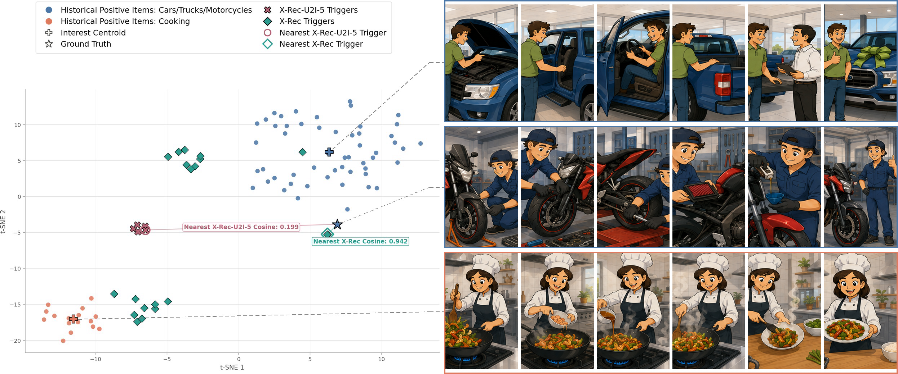
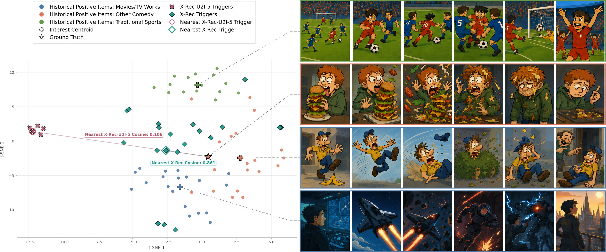
5 线上结果
我们将 X-Rec 部署为 TikTok 垂直内容推荐的一个新召回源。在首次上线（V1，即不带锚点条件化的 X-Rec）中，X-Rec 结合了 RFM 和晚交互，在较高计算效率下实现了较强的生成质量。在第二次上线（V2，即 X-Rec）中，我们进一步引入了锚点条件化，从而在召回性能上带来了额外增益。如 Table 3 所示，X-Rec 在垂直互动（+4.1484%）和整体互动指标（+0.0111%）上均取得了显著提升。这一结果凸显了我们提出的召回方法在真实场景中的影响。
| Metrics | V1 | V2 | Total |
| Vertical Engagement | +2.3779% | +1.7705% | +4.1484% |
| General Engagement | Not significant | +0.0111% | +0.0111% |
6 结论与未来工作
在本工作中，我们提出了 X-Rec，一个基于 FM 的生成式召回框架，它直接在连续物品嵌入空间中建模推荐分布。与将用户兴趣压缩为一个或少数几个确定性召回点的 U2I 方法不同，X-Rec 生成多个随机触发以捕捉多样的兴趣峰。与 SID-AR 方法不同，X-Rec 避免将物品嵌入量化为离散标识符，并消除了逐词元解码。为在工业规模下实现有效且高效的连续生成，X-Rec 融入了三项互补设计：锚点条件化将生成分解为粗粒度语义区域选择和细粒度精化；RFM 使传输路径与归一化物品嵌入的超球几何对齐；晚交互 DiT 复用缓存的条件表示，同时将重复的速度场估计限制在最后一个 Transformer 层。
在流式评估基准上的离线实验表明，X-Rec 在召回质量、兴趣覆盖和生成效率之间取得了良好的平衡。它优于 U2I 和 SID-AR 变体，同时生成吞吐量达到后者的 。在线上实验中，在 TikTok 垂直内容上连续两次上线均取得了业务指标的显著提升。这些结果展示了连续生成式召回作为一种表达力强、高效且实用的范式，对现有工业召回范式具有补充潜力。
未来工作仍有若干方向有待探索。第一，当前采样器需要多步去噪，这促使我们探索少步蒸馏、自适应数值求解器以及硬件感知优化，以降低端到端服务成本。第二，尽管晚交互设计在计算上是高效的，但其可扩展性仍有待充分探索。在严格的服务吞吐量约束下，实际系统必须在召回质量与生成成本之间取得平衡。未来工作可以研究晚交互如何随更大的骨干网络和更深的去噪模块扩展，以及能够动态平衡质量与效率的自适应计算机制。第三，奖励对齐的后训练，例如强化学习，是连续生成式召回的一个有前景的方向。它可能使 X-Rec 能够针对长期用户满意度和内容相关性进行优化，而这些目标仅靠监督学习难以捕捉。
参考文献
- Adaptive sampled softmax with kernel based sampling. In Proceedings of the 35th International Conference on Machine Learning, Proceedings of Machine Learning Research, Vol. 80, pp. 590–599. External Links: Link Cited by: §2.1.
- Theoretical foundations of t-sne for visualizing high-dimensional clustered data. Journal of Machine Learning Research 23 (301), pp. 1–54. Cited by: §4.5.
- Controllable multi-interest framework for recommendation. In Proceedings of the 26th ACM SIGKDD International Conference on Knowledge Discovery and Data Mining, pp. 2942–2951. External Links: Document, Link Cited by: §A.2, §1, §2.1, §2.1, §4.4.1.
- Hllm: enhancing sequential recommendations via hierarchical large language models for item and user modeling. arXiv preprint arXiv:2409.12740. Cited by: §1, §2.1.
- Flow matching on general geometries. In The Twelfth International Conference on Learning Representations, External Links: Link Cited by: §1, §3.2.1.
- A simple framework for contrastive learning of visual representations. In Proceedings of the 37th International Conference on Machine Learning, Proceedings of Machine Learning Research, Vol. 119, pp. 1597–1607. External Links: Link Cited by: §2.1.
- Deep neural networks for YouTube recommendations. In Proceedings of the 10th ACM Conference on Recommender Systems, pp. 191–198. External Links: Document Cited by: §1.
- Tight lower bounds on the VC-dimension of geometric set systems. Journal of Machine Learning Research 20 (81), pp. 1–8. External Links: Link Cited by: §1, footnote 6.
- Onerec: unifying retrieve and rank with generative recommender and iterative preference alignment. arXiv preprint arXiv:2502.18965. Cited by: §1, §2.2.
- Forge: forming semantic identifiers for generative retrieval in industrial datasets. In Proceedings of the 32nd ACM SIGKDD Conference on Knowledge Discovery and Data Mining V. 2, pp. 8858–8869. Cited by: footnote 2.
- Classifier-free diffusion guidance. arXiv preprint arXiv:2207.12598. External Links: 2207.12598, Link Cited by: §4.1.4.
- Expressiveness limits of autoregressive semantic id generation in generative recommendation. External Links: 2605.06331, Link Cited by: §4.1.3.
- Self-attentive sequential recommendation. In IEEE International Conference on Data Mining (ICDM), pp. 197–206. External Links: Document, Link Cited by: §1, §2, §4.1.3.
- Colbert: efficient and effective passage search via contextualized late interaction over bert. In Proceedings of the 43rd International ACM SIGIR conference on research and development in Information Retrieval, pp. 39–48. Cited by: §3.3.3.
- Learning on the manifold: unlocking standard diffusion transformers with representation encoders. arXiv preprint arXiv:2602.10099. Cited by: §1, §3.2.1.
- Efficient memory management for large language model serving with PagedAttention. In Proceedings of the 29th Symposium on Operating Systems Principles, pp. 611–626. External Links: Document, Link Cited by: §1, §2.2.
- The principles of diffusion models. arXiv preprint arXiv:2510.21890. Cited by: footnote 5.
- Autoregressive image generation using residual quantization. In 2022 IEEE/CVF Conference on Computer Vision and Pattern Recognition (CVPR), pp. 11513–11522. External Links: Document Cited by: §1, §2.2.
- Flow matching for generative modeling. In The Eleventh International Conference on Learning Representations, External Links: Link Cited by: §3.1, §3.2.1.
- Flow matching for generative modeling. arXiv preprint arXiv:2210.02747. Cited by: §1, §2.3.
- Flow straight and fast: learning to generate and transfer data with rectified flow. arXiv preprint arXiv:2209.03003. Cited by: §1, §2.3, §4.3.2.
- Decoupled weight decay regularization. arXiv preprint arXiv:1711.05101. Cited by: §4.1.4.
- Representation learning with contrastive predictive coding. arXiv preprint arXiv:1807.03748. Cited by: §2.1.
- Scalable diffusion models with transformers. In 2023 IEEE/CVF International Conference on Computer Vision (ICCV), pp. 4172–4182. Cited by: §1, §3.3.3, §3.3.3.
- Qwen3 technical report. arXiv preprint arXiv:2505.09388. Cited by: §3.3.1, §4.1.4.
- Qwen3.5: accelerating productivity with native multimodal agents. External Links: Link Cited by: §3.3.1.
- Learning transferable visual models from natural language supervision. In Proceedings of the 38th International Conference on Machine Learning, Proceedings of Machine Learning Research, Vol. 139, pp. 8748–8763. External Links: Link Cited by: §1, §2.1.
- Recommender systems with generative retrieval. In Advances in Neural Information Processing Systems, Vol. 36, pp. 10299–10315. External Links: Document, Link Cited by: §1, §2.2, §2.2, §2, §4.1.3, footnote 2.
- Introduction to recommender systems handbook. In Recommender systems handbook, pp. 1–35. Cited by: §1.
- Recommender systems: techniques, applications, and challenges. Recommender systems handbook, pp. 1–35. Cited by: §1.
- LLaDA-Rec: discrete diffusion for parallel semantic id generation in generative recommendation. External Links: 2511.06254, Link Cited by: §4.1.3.
- Blockwise parallel decoding for deep autoregressive models. In Advances in Neural Information Processing Systems, Vol. 31, pp. 10107–10116. Cited by: §1, §2.2.
- Roformer: enhanced transformer with rotary position embedding. Neurocomputing 568, pp. 127063. Cited by: §3.3.1.
- Neural autoregressive distribution estimation. Journal of Machine Learning Research 17 (205), pp. 1–37. External Links: Link Cited by: §2.2.
- Attention is all you need. In NeurIPS, Vol. 30. Cited by: §2.
- EAGER: two-stream generative recommender with behavior-semantic collaboration. In Proceedings of the 30th ACM SIGKDD Conference on Knowledge Discovery and Data Mining, pp. 3245–3254. External Links: Document, Link Cited by: §4.1.3.
- Qwen-image technical report. arXiv preprint arXiv:2508.02324. Cited by: §1, §3.3.3.
- Generate what you prefer: reshaping sequential recommendation via guided diffusion. In Advances in Neural Information Processing Systems, Vol. 36, pp. 24247–24261. External Links: Document, Link Cited by: §4.1.3.
- Adaptive user modeling with long and short-term preferences for personalized recommendation. In IJCAI, Vol. 7, pp. 4213–4219. Cited by: §3.4.2.
- Linear recurrent units for sequential recommendation. In Proceedings of the 17th ACM International Conference on Web Search and Data Mining, pp. 930–938. External Links: Document, Link Cited by: §4.1.3.
- Notellm: a retrievable large language model for note recommendation. In Companion Proceedings of the ACM Web Conference 2024, pp. 170–179. Cited by: §1.
- OneRec technical report. External Links: 2506.13695, Link Cited by: §4.1.4.
- Onerec-v2 technical report. arXiv preprint arXiv:2508.20900. Cited by: §1, §2.2.
7 贡献者
在每个角色内，贡献者按名字的字母顺序排列。标有 * 的贡献者在发表前已离开团队。
通讯作者。
Kun Xǔ (daniel.chen28@bytedance.com)
项目负责人。
Zhiwei Wang (heyisen@bytedance.com)
核心贡献者。
Chenglei Shen, Chenzhe Huang, Dong Jiang, Hongjie Gao, Jue Zhang, Kun Xú, Lincan Cai, Nan Zhuang, Pan Zhang, Shi Chen, Shunchi Zhang, Xiaoyu Ye, Yang Jin, Yu Zhang, Zhenwei An, Zhongtao Jiang
贡献者。
Ao Xu, Chenghao Liu*, Han Xia, Hantian Su, Haoyang Yao, Huixiu Jin, Jialin Li, Jianyuan Bo, Jie Li, Jingwei Li, Junwen Chen, Kailin Ding, Kangcheng Luo, Lin Chen, Linjie Wang, Mengshi Chen, Ming Zhang, Rengzhi Wang, Silong Yu, Song Jin*, Tingyan Li, Weixin Wang, Xin Chen, Xuhang Xiao, Yiming Jia, Yinong Lin, Yifeng Yao, YongKang Zhang, Yu Zhang*, Yuxiao Zhang, Zhangyi Chen, Zhao Wang, Zheng Li, Zixuan Wang
Appendix A 附录
A.1 流式基准上的完整结果
Table 4 和 Table 5 总结了不同模型在 和 上的结果。对于 U2I 方法（SASRec、LRURec、DreamRec 和 X-Rec-U2I），它们产生单个检索嵌入，我们计算 ，所采用的设置为 。对于基于 SID 的方法（TIGER、EAGER、LATTE、LLaDARec 和 X-Rec-AR）以及 X-Rec，它们支持多个检索触发，我们使用 设置。
| Data Partition | X-Rec | X-Rec-U2I | X-Rec-AR | TIGER | LATTE | LLaDARec | DreamRec | EAGER | SASRec | LRURec |
|---|---|---|---|---|---|---|---|---|---|---|
| 1 | 9.7700 | 6.0645 | 9.8633 | 2.6562 | 5.9473 | 5.4004 | 4.7266 | 2.8027 | 0.9375 | 1.0938 |
| 2 | 11.9100 | 6.7285 | 10.7422 | 4.9609 | 5.8398 | 6.6309 | 4.8730 | 4.2383 | 1.4160 | 1.3281 |
| 3 | 12.1100 | 6.6309 | 10.9375 | 6.2891 | 6.7480 | 7.0117 | 3.9844 | 5.7227 | 0.7129 | 0.9082 |
| 4 | 9.2800 | 6.1914 | 9.1797 | 4.5703 | 6.0449 | 6.5430 | 4.2871 | 3.4766 | 0.8691 | 0.9961 |
| 5 | 9.9600 | 6.5625 | 9.6680 | 4.8730 | 5.8496 | 6.2695 | 3.9844 | 3.9551 | 0.9375 | 0.9961 |
| 6 | 11.8200 | 6.9043 | 11.9141 | 6.5332 | 4.1992 | 7.2656 | 5.3320 | 5.5176 | 1.1328 | 1.2402 |
| 7 | 11.0400 | 6.3184 | 10.9375 | 6.2695 | 7.1094 | 6.4062 | 3.6914 | 5.3027 | 0.6250 | 0.8398 |
| 8 | 8.7900 | 6.5918 | 8.1055 | 5.3516 | 6.5723 | 6.6113 | 4.2090 | 3.8379 | 0.8496 | 0.9766 |
| 9 | 10.9400 | 6.9727 | 10.6445 | 5.5273 | 6.5527 | 6.8555 | 3.9258 | 4.5996 | 0.9082 | 1.0254 |
| 10 | 11.6200 | 7.2754 | 13.2812 | 6.9043 | 8.1641 | 6.8652 | 4.4238 | 5.5469 | 1.1230 | 1.4453 |
| 11 | 13.2800 | 6.7090 | 12.6953 | 7.5293 | 8.8965 | 8.1641 | 4.1406 | 6.6504 | 0.9180 | 1.1328 |
| 12 | 11.4300 | 6.9336 | 11.7188 | 5.7910 | 7.0898 | 7.1094 | 3.7695 | 5.3809 | 0.8691 | 1.2109 |
| 13 | 11.7200 | 8.9844 | 10.9375 | 6.9922 | 8.5547 | 8.6230 | 6.9727 | 4.8926 | 1.6309 | 1.7578 |
| 14 | 10.4500 | 7.2754 | 9.7656 | 6.0156 | 7.3242 | 7.1680 | 4.3848 | 6.1035 | 0.9375 | 1.0645 |
| 15 | 11.3300 | 7.4902 | 11.3281 | 6.7969 | 8.3594 | 7.2754 | 4.7852 | 6.4746 | 1.4258 | 1.4355 |
| 16 | 10.8400 | 7.1387 | 10.3516 | 5.6348 | 6.6992 | 6.5039 | 4.4434 | 4.5020 | 1.1816 | 1.4844 |
| 17 | 8.7900 | 6.4941 | 8.3984 | 5.3320 | 6.2695 | 5.9570 | 3.6621 | 4.2188 | 0.8594 | 1.1230 |
| 18 | 12.8900 | 6.5918 | 11.0352 | 5.4688 | 6.9629 | 6.9531 | 4.1895 | 5.4883 | 0.9180 | 1.1133 |
| 19 | 7.5200 | 6.1328 | 7.2266 | 5.0781 | 6.1328 | 5.9961 | 3.4668 | 4.2383 | 0.8301 | 1.1328 |
| 20 | 9.7700 | 6.7969 | 9.5703 | 5.0488 | 6.7871 | 5.9961 | 3.6914 | 4.6387 | 0.8594 | 0.8887 |
| 21 | 11.6200 | 6.6699 | 10.1562 | 6.2305 | 7.7344 | 6.3965 | 3.9941 | 5.3711 | 1.0449 | 1.1426 |
| 22 | 10.3500 | 7.3047 | 8.8867 | 6.1230 | 7.8613 | 6.9141 | 4.5215 | 6.0352 | 1.0156 | 1.1914 |
| 23 | 9.3800 | 5.8008 | 9.1797 | 4.6973 | 6.2207 | 5.5859 | 3.6230 | 3.9062 | 0.7031 | 0.8789 |
| 24 | 8.5900 | 7.1094 | 8.7891 | 5.5762 | 6.8359 | 6.0547 | 3.9258 | 4.4727 | 1.1621 | 1.2109 |
| 25 | 10.3500 | 7.5488 | 11.4258 | 5.2930 | 7.0801 | 6.8848 | 4.7852 | 5.3223 | 1.2207 | 1.3965 |
| 26 | 10.0600 | 6.2012 | 10.2539 | 4.4727 | 6.1523 | 5.9473 | 3.7012 | 3.8867 | 0.8203 | 0.9082 |
| 27 | 11.4300 | 6.8457 | 9.9609 | 4.4336 | 5.9375 | 6.1230 | 3.7109 | 4.8828 | 0.9863 | 1.1816 |
| 28 | 8.5000 | 6.4062 | 9.3750 | 3.9844 | 4.6875 | 5.8398 | 3.6230 | 3.9844 | 0.7227 | 0.8594 |
| 29 | 9.0800 | 6.8359 | 7.9102 | 4.1504 | 6.3672 | 5.9082 | 3.9746 | 4.3750 | 0.9766 | 1.1426 |
| 30 | 10.7400 | 8.2617 | 9.8633 | 4.8340 | 7.0703 | 6.9043 | 5.2637 | 4.4141 | 1.3867 | 1.4844 |
| 31 | 10.9400 | 6.6211 | 10.0586 | 4.5605 | 6.7871 | 5.7910 | 3.7891 | 5.5566 | 0.9668 | 1.2012 |
| 32 | 9.2800 | 6.9238 | 8.0078 | 3.7500 | 6.4844 | 6.2988 | 4.1797 | 4.3359 | 0.7422 | 1.0449 |
| 33 | 10.8400 | 7.4219 | 10.6445 | 5.0293 | 6.8848 | 6.6992 | 5.1855 | 4.5898 | 1.2891 | 1.6309 |
| 34 | 12.0100 | 7.1973 | 10.3516 | 5.1172 | 7.2168 | 5.9277 | 3.9160 | 5.7520 | 1.0352 | 1.3379 |
| 35 | 12.7900 | 7.3633 | 12.0117 | 4.9609 | 7.3340 | 7.2363 | 4.1992 | 6.1328 | 0.8984 | 1.0449 |
| 36 | 10.3500 | 6.8652 | 8.5938 | 4.1797 | 6.4062 | 5.8496 | 3.6426 | 4.0723 | 0.9180 | 1.0742 |
| 37 | 10.3500 | 6.9238 | 9.1797 | 4.4727 | 6.4746 | 5.7813 | 4.0039 | 5.3223 | 0.8789 | 1.1621 |
| 38 | 9.5700 | 7.3242 | 9.2773 | 5.1855 | 8.1055 | 7.4121 | 5.1172 | 5.2930 | 1.2207 | 1.3184 |
| 39 | 11.3300 | 6.7773 | 10.5469 | 4.1602 | 6.8652 | 6.3086 | 3.9648 | 4.8340 | 0.9863 | 1.2500 |
| 40 | 12.1100 | 7.4707 | 10.5469 | 5.5469 | 7.9199 | 6.3477 | 4.2188 | 5.8105 | 1.2695 | 1.4844 |
| 41 | 12.5000 | 8.1543 | 12.4023 | 5.6250 | 8.2227 | 7.3535 | 5.2148 | 6.0742 | 1.2598 | 1.2402 |
| 42 | 10.4500 | 6.5332 | 10.2539 | 4.1406 | 6.7871 | 6.0938 | 3.6133 | 5.0098 | 0.8398 | 1.0352 |
| 43 | 11.5200 | 6.7773 | 10.5469 | 4.5898 | 7.3730 | 6.2402 | 4.1406 | 4.6094 | 0.9473 | 0.9961 |
| 44 | 10.9400 | 7.3145 | 9.6680 | 4.9316 | 7.3633 | 5.7520 | 3.8184 | 5.1855 | 1.1621 | 1.2598 |
| 45 | 12.2100 | 7.0312 | 12.1094 | 5.3418 | 7.8027 | 6.0156 | 4.4043 | 6.0449 | 1.2988 | 1.2207 |
| 46 | 10.2500 | 7.1484 | 10.0586 | 4.5801 | 4.1016 | 6.4258 | 4.5215 | 4.1211 | 1.0645 | 1.2012 |
| 47 | 13.0900 | 8.6328 | 12.5977 | 5.2246 | 6.6113 | 7.2461 | 6.2695 | 4.6289 | 1.5918 | 1.9727 |
| Data Partition | X-Rec | X-Rec-U2I | X-Rec-AR | TIGER | LATTE | LLaDARec | DreamRec | EAGER | SASRec | LRURec |
|---|---|---|---|---|---|---|---|---|---|---|
| 1 | 12.0020 | 8.4277 | 12.2070 | 3.4863 | 6.9824 | 6.0840 | 4.8730 | 3.6523 | 1.5820 | 1.7773 |
| 2 | 12.7344 | 9.1309 | 13.7695 | 6.4746 | 7.4316 | 7.5879 | 5.1660 | 5.8105 | 2.4316 | 2.3730 |
| 3 | 13.6523 | 9.3750 | 14.3555 | 7.9687 | 8.3984 | 8.2520 | 4.2578 | 7.8906 | 1.4941 | 1.7969 |
| 4 | 11.7578 | 8.7500 | 13.5742 | 6.5527 | 7.7148 | 7.7832 | 4.5996 | 5.1855 | 1.5039 | 1.7383 |
| 5 | 11.8164 | 9.0723 | 13.3789 | 6.9238 | 7.5293 | 7.2070 | 4.1602 | 5.4492 | 1.8945 | 2.0898 |
| 6 | 14.4629 | 9.4043 | 15.2344 | 8.3887 | 5.4688 | 8.8086 | 5.4688 | 7.5586 | 2.1777 | 2.3340 |
| 7 | 12.3242 | 8.8965 | 14.0625 | 8.2812 | 8.8867 | 7.5977 | 3.9355 | 7.3242 | 1.3574 | 1.6504 |
| 8 | 12.3535 | 9.1797 | 11.9141 | 7.1680 | 8.1934 | 7.7441 | 4.4043 | 5.6348 | 1.4648 | 1.7285 |
| 9 | 12.2461 | 9.3848 | 13.6719 | 7.3242 | 8.3301 | 8.1543 | 4.1797 | 6.3086 | 1.6113 | 1.7773 |
| 10 | 13.8672 | 9.8730 | 16.0156 | 9.0723 | 10.2246 | 8.5352 | 4.5410 | 7.8418 | 2.0605 | 2.5293 |
| 11 | 14.4043 | 9.3750 | 16.6992 | 9.9121 | 11.2012 | 9.4824 | 4.3945 | 9.2090 | 1.6797 | 2.0312 |
| 12 | 13.2812 | 9.6582 | 14.9414 | 8.3398 | 9.2578 | 8.6328 | 4.0137 | 7.5586 | 1.6211 | 2.1191 |
| 13 | 15.0195 | 11.4746 | 13.2812 | 9.1797 | 10.5469 | 10.0293 | 7.0801 | 6.7773 | 2.5488 | 2.7734 |
| 14 | 13.8281 | 10.3809 | 13.8672 | 7.8809 | 9.1016 | 8.5352 | 4.5801 | 8.5156 | 1.9434 | 2.2168 |
| 15 | 14.4727 | 10.1758 | 14.0625 | 8.8867 | 10.5371 | 8.8281 | 5.0293 | 8.7695 | 2.4219 | 2.5000 |
| 16 | 13.0762 | 9.9805 | 13.6719 | 7.7539 | 8.8574 | 7.8613 | 4.6094 | 6.8945 | 2.1973 | 2.7051 |
| 17 | 11.2988 | 9.1504 | 11.4258 | 6.9434 | 7.9883 | 7.0508 | 3.8477 | 5.8887 | 1.6504 | 1.9434 |
| 18 | 13.6719 | 9.2480 | 14.3555 | 7.5000 | 8.8574 | 8.3594 | 4.4727 | 7.4414 | 1.6895 | 2.0312 |
| 19 | 10.9180 | 8.4766 | 9.2773 | 6.7285 | 7.8711 | 7.1094 | 3.6426 | 5.9863 | 1.5723 | 1.8652 |
| 20 | 11.8066 | 9.0332 | 11.8164 | 6.9531 | 8.5352 | 7.2363 | 3.8867 | 6.6309 | 1.6406 | 1.7090 |
| 21 | 13.1250 | 9.7754 | 13.1836 | 8.2129 | 9.6875 | 7.8125 | 4.3164 | 7.8613 | 2.1582 | 2.2266 |
| 22 | 13.0078 | 9.7949 | 11.2305 | 8.1738 | 9.9414 | 8.5156 | 4.7559 | 8.3594 | 1.9531 | 2.0996 |
| 23 | 10.9668 | 8.6523 | 12.5000 | 6.4258 | 7.8027 | 6.5527 | 3.7891 | 5.5371 | 1.3965 | 1.7090 |
| 24 | 11.9043 | 9.4727 | 10.9375 | 7.3438 | 8.8965 | 7.2266 | 4.1602 | 6.2598 | 2.1777 | 2.1484 |
| 25 | 13.1348 | 10.6445 | 14.9414 | 7.2363 | 8.9453 | 7.9492 | 4.9805 | 7.3145 | 2.3047 | 2.5488 |
| 26 | 10.8301 | 8.7402 | 14.0625 | 5.9766 | 7.7441 | 6.9531 | 3.9160 | 5.4590 | 1.8164 | 1.9238 |
| 27 | 11.8652 | 9.7266 | 12.6953 | 6.2012 | 7.5977 | 7.3926 | 3.9746 | 6.6211 | 1.9043 | 2.1191 |
| 28 | 10.9863 | 8.9062 | 13.0859 | 5.3906 | 6.2988 | 6.6699 | 3.7793 | 5.5078 | 1.3672 | 1.7578 |
| 29 | 11.5137 | 9.5410 | 10.3516 | 5.6836 | 8.1250 | 6.9336 | 4.2383 | 5.8789 | 1.9336 | 2.1387 |
| 30 | 12.9199 | 11.1914 | 12.7930 | 6.6113 | 8.9062 | 7.9687 | 5.5176 | 6.5527 | 2.4316 | 2.7930 |
| 31 | 12.0898 | 9.2383 | 13.0859 | 6.1133 | 8.5938 | 6.7676 | 4.0625 | 7.4609 | 1.6406 | 2.2559 |
| 32 | 11.9531 | 9.7168 | 11.4258 | 5.2637 | 8.1836 | 7.3535 | 4.3848 | 6.0352 | 1.4062 | 1.9336 |
| 33 | 12.4805 | 10.3320 | 13.9648 | 6.5137 | 8.5547 | 7.7637 | 5.4199 | 6.1719 | 2.3145 | 2.8516 |
| 34 | 12.8223 | 10.5078 | 13.6719 | 7.0020 | 9.3945 | 7.3242 | 4.1406 | 7.9395 | 2.1973 | 2.5879 |
| 35 | 13.3301 | 10.4102 | 15.1367 | 7.2559 | 9.4727 | 8.3984 | 4.5508 | 8.1152 | 1.8457 | 2.1191 |
| 36 | 11.7969 | 9.6484 | 11.3281 | 5.7910 | 7.9687 | 7.0605 | 3.8184 | 5.7227 | 1.6309 | 1.9238 |
| 37 | 12.5488 | 9.7949 | 12.3047 | 6.1328 | 8.3008 | 7.0020 | 4.1504 | 7.2266 | 1.6602 | 2.3730 |
| 38 | 12.9492 | 9.6094 | 12.5000 | 6.7871 | 9.6973 | 8.2422 | 5.3906 | 7.1289 | 2.0801 | 2.2266 |
| 39 | 12.4805 | 9.8535 | 13.9648 | 5.7031 | 8.8672 | 7.3730 | 4.2676 | 6.6309 | 1.9141 | 2.2070 |
| 40 | 13.7695 | 10.6543 | 13.2812 | 6.9824 | 9.8340 | 7.5391 | 4.5020 | 7.9785 | 2.4609 | 2.7539 |
| 41 | 13.9453 | 10.6641 | 14.7461 | 7.5879 | 10.4688 | 8.7207 | 5.4883 | 8.2422 | 2.0996 | 2.1582 |
| 42 | 12.2461 | 9.1895 | 12.6953 | 5.7910 | 8.8672 | 7.3438 | 3.8281 | 7.0605 | 1.6895 | 1.9336 |
| 43 | 12.6172 | 9.4824 | 13.5742 | 6.2988 | 9.3359 | 7.2852 | 4.2578 | 6.4160 | 1.7578 | 2.0996 |
| 44 | 13.1348 | 10.0977 | 12.5977 | 6.6309 | 9.2383 | 7.0996 | 4.1016 | 7.4121 | 2.2363 | 2.3535 |
| 45 | 13.4863 | 9.9707 | 15.3320 | 7.1777 | 9.8242 | 7.1582 | 4.6094 | 8.1250 | 2.1875 | 2.2656 |
| 46 | 12.1289 | 9.4824 | 12.3047 | 5.9766 | 5.5566 | 7.5586 | 4.7070 | 5.9277 | 1.8555 | 2.1289 |
| 47 | 14.0039 | 11.2207 | 15.5273 | 6.7969 | 8.2617 | 8.3789 | 6.5332 | 6.3281 | 2.5098 | 3.1543 |
A.2 X-Rec-AR 与 X-Rec-U2I-K 的架构
X-Rec、X-Rec-AR 和 X-Rec-U2I- 共享相同的 Qwen3-0.6B 主干、用户上下文和物品表示空间。它们仅在召回触发的获取方式上有所不同。
X-Rec-AR。
X-Rec-AR 采用自回归架构来生成目标 SID。具体而言，它将上下文表示 作为前置提示，并使用因果语言建模头对目标 4 词元 SID 序列上的分布进行建模。该模型使用交叉熵损失进行训练。在推理过程中，我们应用束搜索生成高概率 SID，并使用 RQ 码本重建召回触发。
X-Rec-U2I-。
X-Rec-U2I- 采用 ComiRec-SA (Cen et al., 2020) 中的自注意力多兴趣提取模块，从用户上下文中导出 个用户兴趣嵌入。给定上下文的最后一层隐藏表示 ，我们引入可学习的查询向量 、，以提取多个兴趣触发：
| (34) |
其中 是可学习的投影矩阵。
在训练过程中，原始的 ComiRec-SA 实现仅使用获胜触发，即最接近目标物品 的触发，来构建对比学习损失：
| (35) |
然而，我们观察到该策略高度不稳定，并在我们的流式基准上导致较差的性能。因此，我们采用一种改进的变体。对于每个候选物品（包括目标物品和负样本物品），我们首先选择其最近邻的兴趣触发，然后使用每个物品嵌入与其对应的最近邻触发之间的相似度来计算对比损失。改进后的损失定义为：
| (36) |
这样，所有兴趣触发都能获得直接的优化信号，而不是仅更新获胜触发。这显著提高了训练稳定性，并在流式基准上带来了更好的性能。在推理过程中，学习到的兴趣触发用于从 ANN 索引中召回候选。因此，X-Rec-U2I- 使用有限的一组确定性用户向量来表示用户兴趣多样性，而不是连续的生成分布。
A.3 附加的多兴趣案例研究
在 Figure 11 和 Figure 12 中，X-Rec-U2I-5 的触发集中在单个局部区域，而 X-Rec 的触发覆盖多个兴趣簇。这一观察支持了 section 2.3 中的表达性主张：通过直接建模目标推荐分布，X-Rec 能够比 U2I 方法更有效地捕捉多样且多峰的用户兴趣。
为了检验这一模式是否由 X-Rec-U2I-5 的五个触发预算引起，我们将触发数量增加到 10。如 Figure 13 和 Figure 14 所示，增加触发数量并不会改变集中模式。因此，仅仅增加 U2I 触发数量并不能消除所观察到的表达性差距。
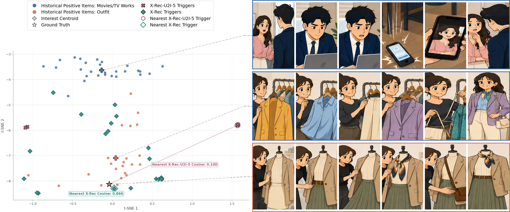
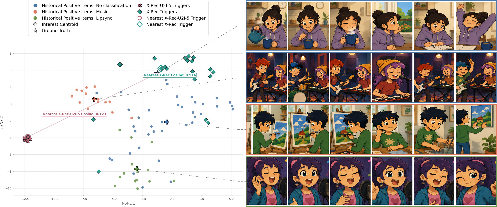
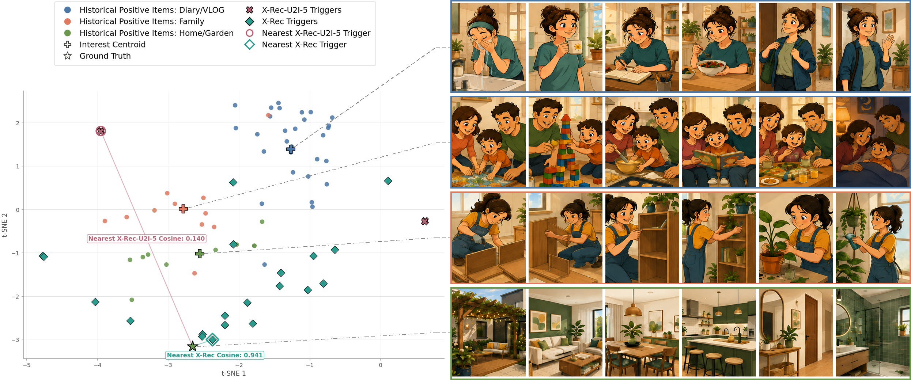
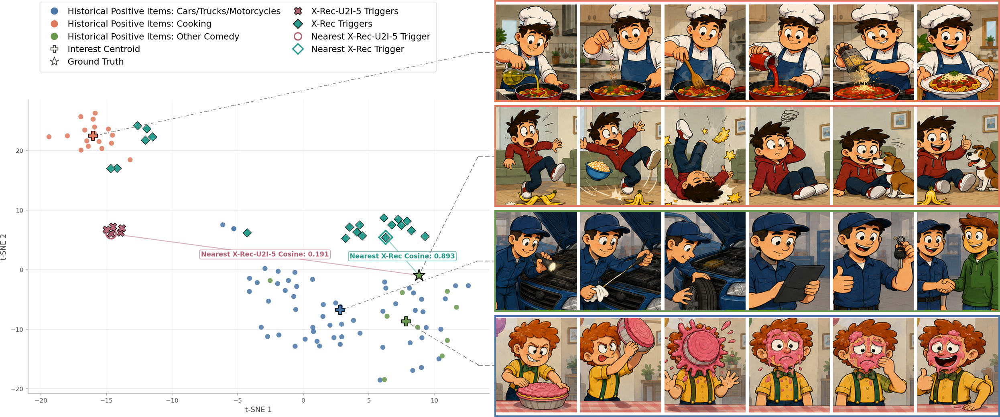
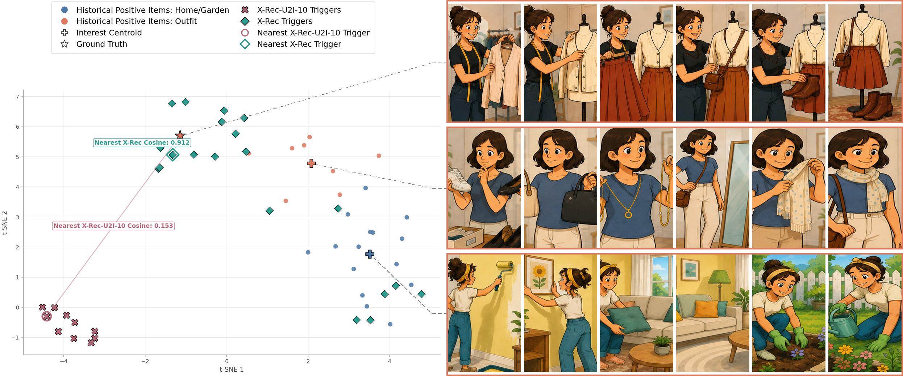
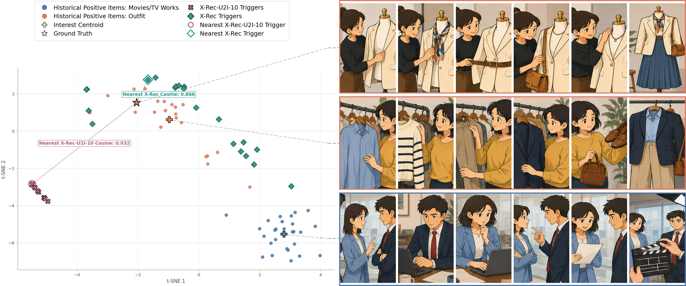
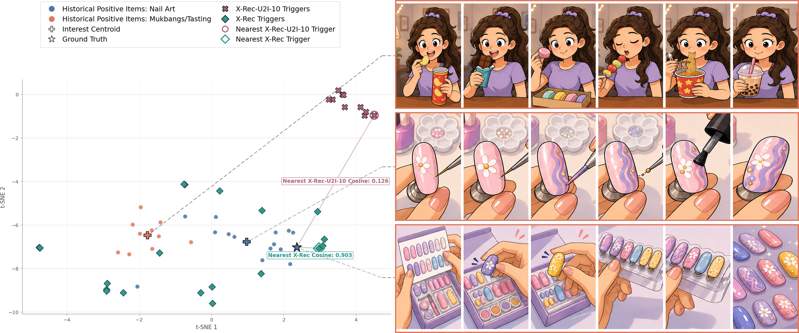
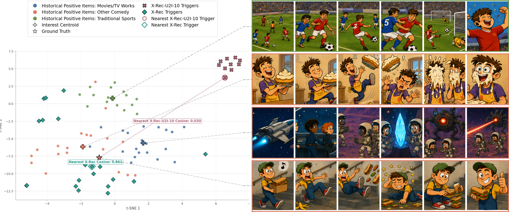